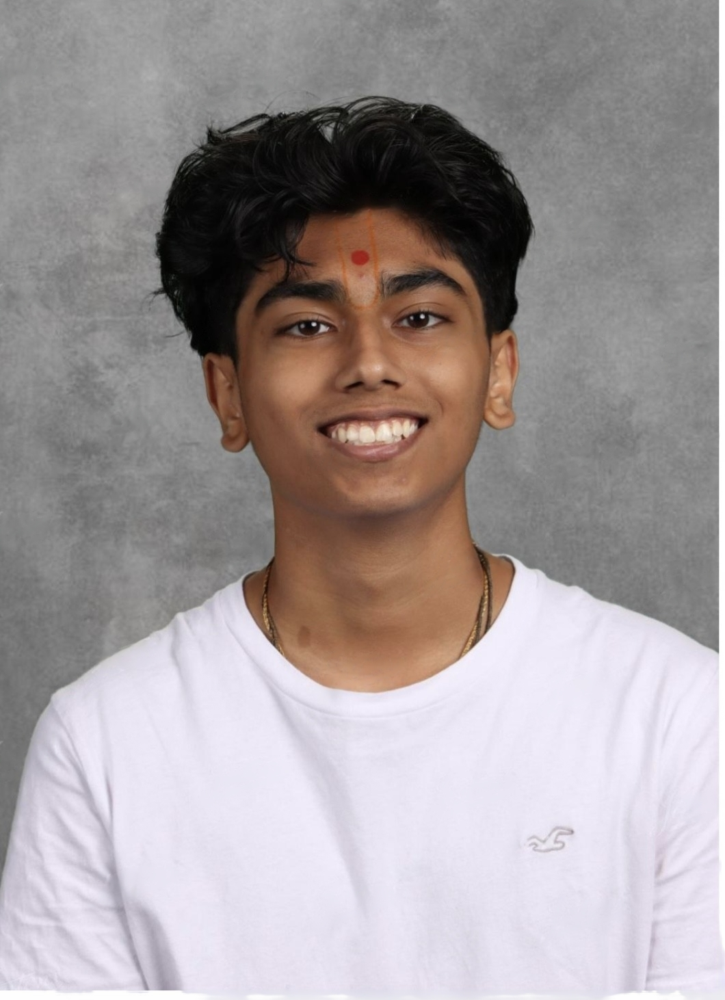

Name: Nayan Patel
Grade: 11th Grade (Junior)
School: Wake Early College of Information and Biotechnology
Email: nmpatel133@gmail.com
Instagram: nayanpat133
Greetings, my name is Nayan Patel. As an Early College student, I aspire to accomplish a great deal to shape my future. One of my primary goals is to master multiple programming and markup languages before graduating high school. Currently, I have a strong command of Python and some experience with CSS and HTML. I also plan to apply my coding skills to various projects, including one for my schools RSA club. This club hosts an app-building competition where students leverage their technical abilities to compete. My goal is to win this competition alongside my groupmates.
In the future, I aim to become either an Engineer or a Software Developer. I am particularly fascinated by how GPUs and CPUs are designed and the intricate research involved in making them functional. My dream is to work at Nvidia, one of the leading creators of GPUs and CPUs. To achieve this, I plan to pursue a degree in Computer Science or Computer Engineering.
After high school, I hope to attend Georgia Tech or NC State, both of which offer incredible opportunities to help me reach my goal of becoming a software developer. Even at WECIB, I have the chance to get ahead by learning five programming and markup languages: Java, JavaScript, Python, HTML, and CSS. These valuable experiences and skills will undoubtedly prepare me for the future and set me on the path to achieving my dreams.
In the future, I aim to become either an Engineer or a Software Developer. I am particularly fascinated by how GPUs and CPUs are designed and the intricate research involved in making them functional. My dream is to work at Nvidia, one of the leading creators of GPUs and CPUs. To achieve this, I plan to pursue a degree in Computer Science or Computer Engineering.
After high school, I hope to attend Georgia Tech or NC State, both of which offer incredible opportunities to help me reach my goal of becoming a software developer. Even at WECIB, I have the chance to get ahead by learning five programming and markup languages: Java, JavaScript, Python, HTML, and CSS. These valuable experiences and skills will undoubtedly prepare me for the future and set me on the path to achieving my dreams.
I had created a database including all the Colleges median GPA and SAT scores. Once they input their info, it searches the database using pandas and gives you the colleges you fit the most.
This was made in my Python 1 class when working on dictionaries. I made a long list of dictionaries and once the person inputs the key, it takes the message out of the dictionary and output it into the console.
I had made a Godot Game using GD_Script. This included animations, controls, graphics, logic, and more.